| Lv | クエスト名 | 受諾可能Lv | 称号効果 | 開始NPC | NPC座標 | 備考 |
|---|---|---|---|---|---|---|
| 取引人１ | 商道とは | 7 | 露天同時販売可能 アイテム数 3個 |
露天組合広報員 | 古都ブルンネンシュティグ （76,75） |
古都→ブリッジに行き、質問に答える。 |
| 取引人２ | 露天商試験支援 露天商試験解答集 |
7 | 露天同時販売可能 アイテム数 4個 |
ネティスン | 伐木町ブレンティル ブレンティル旅館内 |
質問に答える。 受験に200万Gが必要。 |
| 取引人３ | 取引成立の条件 | 100 | 露天同時販売可能 アイテム数 5個 |
カンドス | 港町ブリッジヘッド （73,116） |
・バリアートでワインの箱を触って調べる ・シーフギルド倉庫Aの入ってすぐの所でクリック |
| 取引人４ | アリアン侵攻の阻止 | 200 | 露天同時販売可能 アイテム数 6個 |
ガースト | オアシス都市アリアン （40,68） |
・アリアン→で密使ジョンを倒す ・アリアンの上の方にある看板を5箇所触る ・アリアン→→で砂漠の薔薇団を訪問 |
| 取引人５ | ストライキ！ | 300 | 露天同時販売可能 アイテム数 7個 |
ドリス | 農村ラカリフサ （37,102） |
・ラカリフサ街中の３人に話しかけ、ストライキをやめるよう説得 ・ラカリフサ↑でエルベルを倒す |
| NPC | クエ内容 | MAP/座標 | 備考 |
|---|---|---|---|
| 露天組合広報員 | 古都ブルンネンシュティグ （76,75） |
いきなりブリッジの試験官に話してもＯＫ。 その場合は受検料５００Ｇを払う必要がある。 |
|
| 露天組合試験官 | 港町ブリッジヘッド （82,79） |
中央付近。 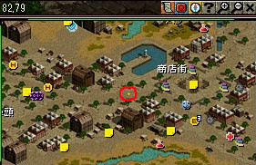 全２２問の質問に答える。 一定以上正解すると合格し、称号がもらえる。 ５問以上間違えると不合格。 下に解答を載せておくので、参考にされたし。 |
|
| ＜解答早見表＞ Q01： ４ Q02： １ Q03： ３ Q04： ３ Q05： ２ Q06： ２ Q07： ２ Q08： ２ Q09： ４ Q10： １ Q11： ４ Q12： ３ Q13： １ Q14： ４ Q15： １ Q16： １ Q17： ４ Q18： ２ Q19： ４ Q20： １ Q21： ３ Q22： ３ |
|||
| ＜問題詳細および解答＞ Q01：ブルンネンシュティグの武器屋であるウィル・フレドさんが扱う武器の中で一番高いのはどれでしょうか？ 1）練習用の両手持ち剣 2）カトラス 3）クリスナーガ 4）クレイモア Q02：ブルンネンシュティグ雑貨商の従業員であるドロシーさんが取り扱わないものはどれでしょうか？ 1）キャンディー 2）スモールヒールポーション 3）スモールチャージポーション 4）帰還の巻物 Q03：次の商人の中で追放天使の武器を取り扱うのは誰でしょう？ 1）ブレンシー 2）トンキン 3）チョキー 4）リン・ジェイク Q04：トンキンさんが売るものはどのクラスが使う武器でしょうか？ 1）戦士 2）ビショップ 3）アーチャー 4）ウィザード Q05：ブルンネンシュティグの全商店の中で、一番高い品を扱っている店のオーナーは誰でしょうか？ 1）エイドゥル 2）ゼンシ 3）リン・ジェイク 4）ブレンシー Q06：アイテムの中で、竜の心臓というアイテムの機能は？ 1）HPがしばらくの間、最高値に維持。 2）CPがしばらくの間、最高値に維持。 3）街へ帰れる。 4）本を読めるようにする Q07：ハノブで売るものです。これはエンチャントが失敗したとき、破壊されたアイテムを復旧する為に使われます。これはなんでしょうか？ 1）ジム・モリのエンチャント文書、さいころセット 2）超強力ボンド 3）幸運のクローバー 4）刀油 Q08：ハノブで売る矢は各種類、何個ずつ売っているのでしょうか？ 1）120個 2）255個 3）60個 4）400個 Q09：神聖都市アウグスタでは主にどんなクラスの武器が多く売れているでしょうか？ 1）ウルフマン 2）ウィザード 3）ランサー 4）ビショップ Q10：以下の中で、アウグスタで商売をしていないのは誰でしょうか？ 1）ドギ・タニア 2）ルエン 3）チェン 4）ダーキンソン Q11：アウグスタの商人、ルエンさんが売っていないものはどれでしょうか？ 1）スモールヒールポーション 2）花 3）フルヒールポーション 4）[知恵比率上昇Lv2]イヤリング Q12：以下の商人の中でアウグスタにおいて一番高い物を売るのは誰でしょうか？ 1）ミュセン 2）シルリド 3）チェン 4）エイドゥル Q13：以下の物の内、女性だけで共通して着用可能なアイテムはどれでしょうか？ 1）ダブルイヤリング 2）オーボエ 3）テナーオーボエ 4）ライトアーマー Q14：ブリッジヘッドのデクストラルさんが販売するラージヒールポーションは何本ずつ販売されるでしょうか？ 1）1個 2）5個 3）20個 4）10個 Q15：次のうち、ブリッジヘッドのラビルライシさんが販売する物はなんでしょうか？ →正答なしの為、全て正解になる模様。 1）クリスナーガ 2）狩り用弓 3）ライトアーマー 4）スリング Q16：次はルイストロングさんが販売する物です。これらの内、一番安いのはどれでしょうか？ 1）銀の翼 2）クリス 3）合金の牙 4）クレイモア Q17：ドギ・タニアさんが販売するエンチャント水晶の内、自動リロードの水晶の値段はいくらでしょうか？ 1）10000 2）100000 3）200000 4）5000 Q18：次の商人の内、武器商人は誰でしょうか？ 1）ブルンネンシュティングのドロシー 2）アウグスタのダーキンソン 3）ブルンネンシュティングのクリムスン 4）ブルンネンシュティングのゼンシ Q19：次の商人の内、雑貨商人は誰でしょうか？ 1）ブリッジヘッドのルインズテラ 2）ブリッジヘッドのオカナー 3）ブリッジヘッドのガーウィンテル 4）ブリッジヘッドのデクストラル Q20：次の都市の内、商人が一番多いのは何処でしょうか？ 1）ブルンネンシュティング 2）アウグスタ 3）ハノブ 4）ブリッジヘッド Q21：ブルンネンシュティングにいる商人は何名でしょうか？露天商人と、商店商人を含めてください。 1）8名 2）14名 3）12名 4）13名 Q22：次の内、全ての商店の中で最も高価な防具を扱っている商人は誰でしょうか？ 1）エイドゥル 2）ゼンシ 3）リン・ジェイク 4）チョキー |
|||
| NPC | クエ内容 | MAP/座標 | 備考 |
|---|---|---|---|
| ネティスン | 伐木町ブレンティル ブレンティル旅館内 |
古都冒険家協会へ。 ロビーあたりを記憶１推奨。 称号担当官（古都冒険家協会・クエスト案内にいる） ５１１ で直通。 ２００万G払って、全５問の質問に答える。 ?問以上間違えると不合格。 問題はランダムで出される。同じ問題が２回以上出ることもある。 |
|
| ＜問題詳細および解答（アイウエオ順）＞ 選択肢もランダムで並べ替えられている可能性があるため、正答のみ記述する。 Q：3000Goldのアイテムが、流通過程で315％のプレミアムが付きました。 流通過程でついたプレミアムにさらに何％を上乗せすれば、販売価格が9900Goldになりますか？ A： 15％ Q：ある品物の原価の120％で品物を手に入れた。 露天を開設し、それを10％の利潤を付けて販売した場合、9900Goldを手に入れた。 原価はいくらでしょうか？ A： 7500Gold Q：ウルフマンと武道家が使う武器でバグナグという武器があります。 この武器は基本防御力が上昇しますが、最も上質な物で防御力はいくつ上昇するでしょう？ A： 2 Q：原価が300000Goldのアイテムがあります。 このアイテムはどの商人に売れば、最も利益を上げる事ができますか？ A： 最高買取額が50000、原価の15％で買取 Q：十字架のような追放天使、悪魔用の魔法ダメージ増加アイテムはどこで手に入れることが出来ますか？ A： アウグスタ Q：総人口が20人の島で誕生日を祝う事業を始めようと思います。 誕生日が同じ二名が一緒に申し込む場合は、割引をするサービスを計画しています。 そこで割引サービスの基準を決定するために誕生日が同じになる確率を求めようと思います。 20人の中で、誕生日が少なくとも１組は同じになる確率は何％でしょうか？ A： 41％ Q：ターバンとチャドルは砂漠での生活には必須のアイテムです。 この二つのアイテムを販売する商人はどこにいますか？ A： セスナの道 Q：高い能力を持つ装備品としてデラックスアイテムがあります。 この装備品は使用する度に耐久度が減少し、修理をする必要がありますが、このアイテムはどこの商店で買うことが出来ますか？ A： 売っていない Q：追放天使の翼補助が多く出回っていますが、この翼補助には特殊能力が付加してあります。 その特殊能力とは何でしょうか？ A： 悪魔対抗ダメージ増加 Q：入場するためには、所持金の5％を通行料として支払わなければならない、秘密商店があります。 あなたが10000ゴールドを持って5回出入りした場合、手元にいくら残るでしょうか？ ただし、1ゴールド未満は切り捨てます。 A： 7736 gold Q：ビショップの武器の中で一部のものは相手をスタンさせる効果があります。 他の武器にはスタンとは他の効果がありますが、それはどんな機能でしょうか？ A： 不死対抗ダメージ増加 Q：ブルンネンシュティグの商人の中で、アイテムを一番低い価格で買い取る商人は誰でしょうか？ A： ステビン Q：ブローチ、腕刺青、肩刺青を購入することができる商店は、どの街にありましたか？ A： スマグ Q：魔法抵抗力がわずかに上昇する原石や宝石を販売している商店は、どこの街にありますか？ A： スマグ Q：丸太をピラミッド型に積み上げています。 ３本の丸太を積み上げる場合は、一番下には２本の丸太を、 ６本の丸太を積み上げる場合は、一番下には３本の丸太を並べます。 では、７８本の丸太を積み上げる場合、一番下には何本の丸太を並べる事になりますか？ A： 12本 Q：最も上質な騎兵刀のクリティカル確率は最大で何％でしょう？ A： 20％ Q：最も上質なショルダーパッドの防御力はどれでしょう？ A： 14 Q：最も上質なハーフプレートの防御力はどれでしょう？ A： 14 Q：最も上質の火矢による火ダメージの上限はどれでしょう？ A： 12 |
|||
| NPC | クエ内容 | MAP/座標 | 備考 |
|---|---|---|---|
| カンドス | 港町ブリッジヘッド （73,116） |
取引人２から続きの場合は記憶１を使って。 そうでなければ、古都冒険家協会へ。 ロビーあたりを記憶１推奨。 称号担当官（古都冒険家協会・クエスト案内にいる） ５１１ で直通。 中央下方面。 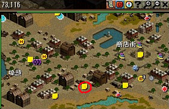 |
|
| ベラン | 潜伏しているベランを手伝うため、 状況を聞く |
大きな町バリアート （73,96） |
風の羽を使うか、 一般クエスト担当（古都冒険家協会・クエスト案内にいる） １２２１１ でバリアート酒場に飛び、外に出て右方面に進む。 なお、該当の一般クエスト（ゴールド・ラッシュ）を終わらせている場合、 この移動方法は使えないかもしれない。 ベランの前を記憶２推奨。 |
| ワインを包装した箱を調べ、 怪しい点を見つけ出す |
大きな町バリアート | 右上のメディッチ家門邸宅周辺にあるワインの箱をクリックしていく。 当たりの箱をクリックするとUP。どれが当たりかはランダムのようだ。 ワインの箱および場所は↓参照。 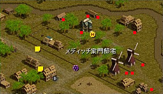 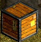 |
|
| ベラン | 大きな町バリアート （73,96） |
記憶２を使って。 | |
| 偽造ワインを探し出す | シーフギルド倉庫[A] 1F （9,19） |
入ってすぐ左上。 | |
| ベラン | 大きな町バリアート （73,96） |
記憶２を使って。 | |
| カンドス | 港町ブリッジヘッド （73,116） |
これ以降、商人組合と貿易連合との抗争が 取引人クエ全体のストーリーラインになっているようだ。 |
| NPC | クエ内容 | MAP/座標 | 備考 |
|---|---|---|---|
| ガースト | オアシス都市アリアン （40,68） |
取引人３から続きの場合は記憶１を使って。 そうでなければ、古都冒険家協会へ。 ロビーあたりを記憶１推奨。 称号担当官（古都冒険家協会・クエスト案内にいる） ５１１ で直通。 ガーストの前を記憶２推奨。 ホールテレポータの近く。 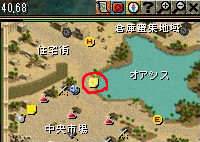 |
|
| 密使を退治し、 アリアン侵攻計画書を奪取する |
西プラトン街道／アリアン東部地域 （191,100） |
記憶１を使って古都冒険家協会へ戻る。 ミラーテレポータ（古都冒険者協会のロビーにいる） １１１４９ 飛んでから道なりに少し右へ。道の途中にいる。 対象MOBは密使ジョン（エクソシスト Lv75〜80）。 普通のノンアクティブMOBなので、見逃して通り過ぎないよう注意。 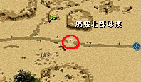 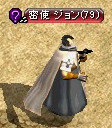 |
|
| ガースト | オアシス都市アリアン （40,68） |
記憶２を使って。 | |
| 5個の看板に書かれている 放火の目印を消す |
オアシス都市アリアン | 看板の位置は↓の赤の点参照。5箇所全部触るとUP。 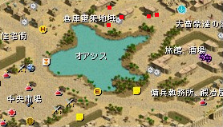 |
|
| ガースト | オアシス都市アリアン （40,68） |
記憶２を使って。 | |
| 傭兵団長ハヌーフ | 砂漠の薔薇団の駐屯地に行き、 侵攻をやめるよう交渉する |
ガディウス大砂漠／リンケン北部地域 （39,140） |
記憶１を使って古都冒険家協会へ戻る。 ミラーテレポータ（古都冒険者協会のロビーにいる） １１１１６ で、呪いの墓Ｂ１に飛び、外へ出て左へ。 「砂漠の薔薇団キャンプ」の左上から入り、 一番右下奥に傭兵団長ハヌーフがいる。 |
| ガースト | オアシス都市アリアン （40,68） |
記憶２を使って。 |
| NPC | クエ内容 | MAP/座標 | 備考 |
|---|---|---|---|
| ドリス | 農村ラカリフサ （37,101） |
取引人４から続きの場合は記憶１を使って。 そうでなければ、古都冒険家協会へ。 称号担当官（古都冒険家協会・クエスト案内にいる） ５１１ で直通。 ドリスの前を記憶２推奨。 左下方面。 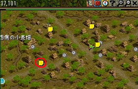 |
|
| ガトー | ストライキを解決するため 地主のガトーさんを訪問する |
農村ラカリフサ （75,109） |
少し右に行った所。 |
| ベルシ | ストライキ主導者を説得し、 撤回書にサインさせる |
農村ラカリフサ （113,97） |
３人を訪問して話して行くだけ。 |
| クレン | 農村ラカリフサ （108,40） |
||
| パーン | 農村ラカリフサ （30,40） |
||
| ガトー | 農村ラカリフサ （75,109） |
||
| ドリス | 農村ラカリフサ （37,101） |
記憶２を使って。 | |
| エルベルを倒し、 横領した小麦販売代金を取り戻す |
ネイダック平原／ラカリフサ北部地域 （150,20）付近 |
エルベル（ならず者１ Zin Lv260〜265）は ラカリフサ↑マップの一番上の方にいる。 木に隠れて見えにくい事があるので注意。 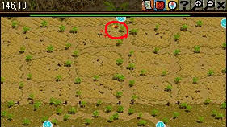 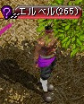 |
|
| ドリス | 農村ラカリフサ （37,101） |
記憶２を使って。 |